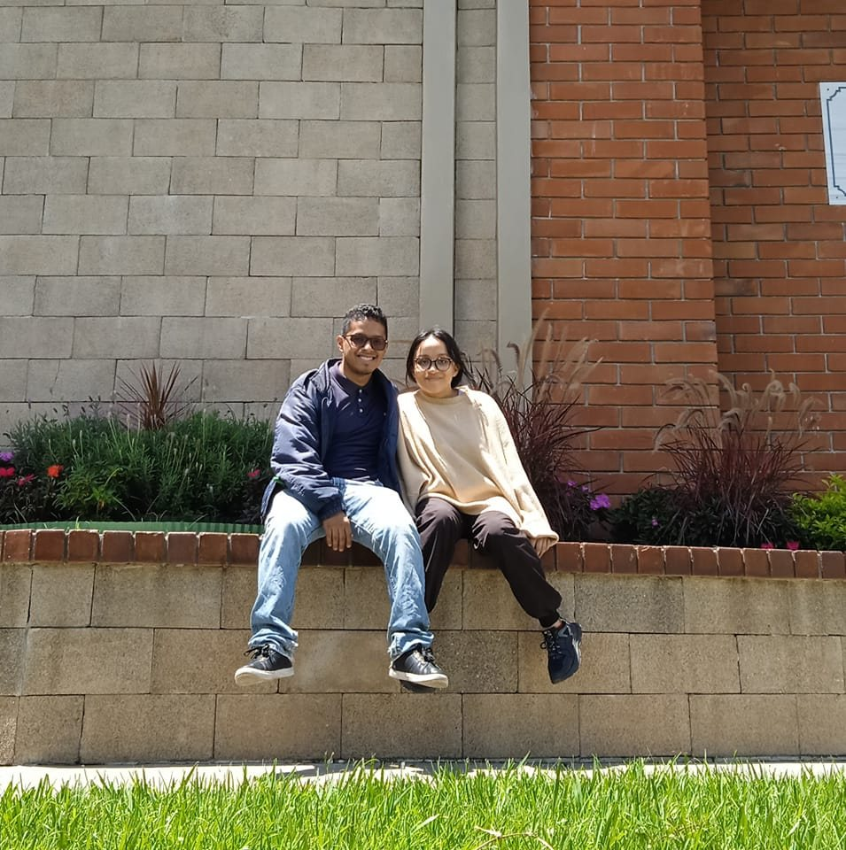

About Me
My name is Erwin Jared Larios and I go by Jared. I'm from Guatemala City and I served in Honduras Tegucigalpa Mission. I got married in december of 2023. I love my family and the technology!

Guatemala City, Guatemala

Guatemala City is the site of the Mayan city of Kaminaljuyu, founded around 1500 BC. Following an earthquake in La Antigua in 1776 it was made capital of the Captaincy General of Guatemala. In 1821, Guatemala City was the scene of the declaration of independence of Central America from Spain, after which it became the capital of the newly established United Provinces of Central America